Drachtig enzo
11 juni 2018
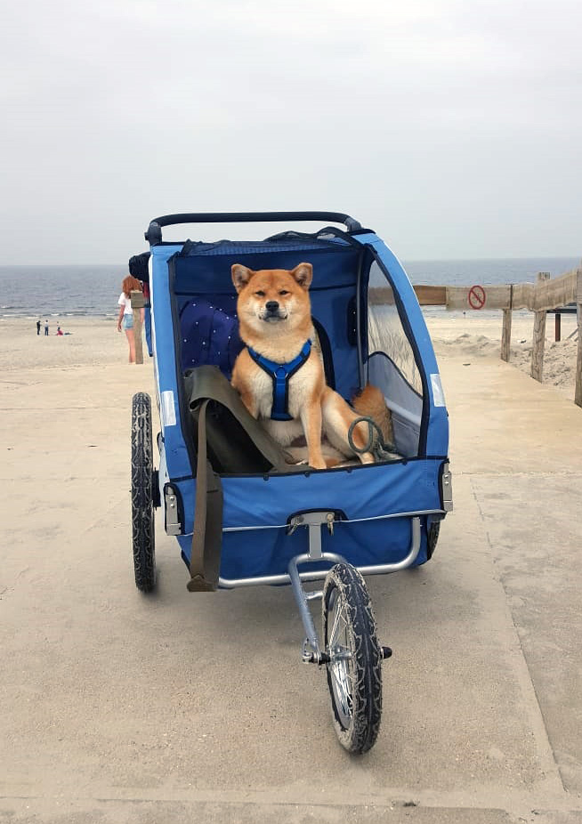 Oki is nu ruim 6 weken zwanger. Zwanger en lui. Het liefst ligt ze te slapen op de bank, of ergens in
de schaduw in de tuin. Nu helpt het warme weer natuurlijk ook niet mee, maar ze maakt het wel heel bont.Vorig
weekend zijn we een dagje naar Ameland geweest en voor de zekerheid hadden we de kar meegenomen. We wilden
namelijk wel gewoon lekker wandelen, en daar komt weinig van als je een koppige shiba moet meeslepen.
Mevrouw heeft genoten, ze wil niet meer anders vrees ik!
Afgelopen woensdag zijn we ook nog met spoed
langs de dierenarts gegaan. Oki verloor een groene substantie en dat was toch wel even zorgwekkend. Bij
de dierenart hebben we een nieuwe echo gedaan en daarop waren gelukkig actieve pups te zien. Wel had
Oki een lichte ontsteking, en daar hebben we pencilline voor meegekregen. Op deze echo waren meer dan
twee pups te zien, een stuk of drie/vier zei de dierenarts. Oki gedroeg zich dit keer perfect bij de
dierenarts. Natuurlijk gejammer, maar tja het blijft wel een shiba!
Puppies!
29 mei 2018
Yuki (Magic Touch Incipta Vita) x Oki (Kuro-gitsune Toshi) verwachten eind juni pups.
Op de echo waren duidelijk twee pups te zien. Wat zijn wij blij!
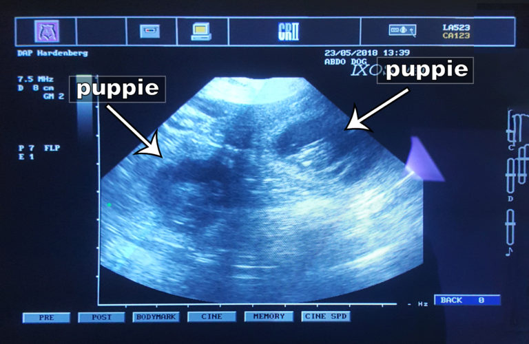
Oki zal ook blij zijn, tijdens het kanotochtje afgelopen zondag hadden we het nog over dieeten als
op de echo zou blijken dat ze niet zwanger was. Oki is sinds de dekking namelijk verandert van een
hond die amper wat eet in een vreetmonster. De baasjes, prullebak en de katten hebben het er zwaar mee.
Als het goed is zijn alle illigale snackplekken nu onbereikbaar voor haar dus hebben wij weer wat rust.
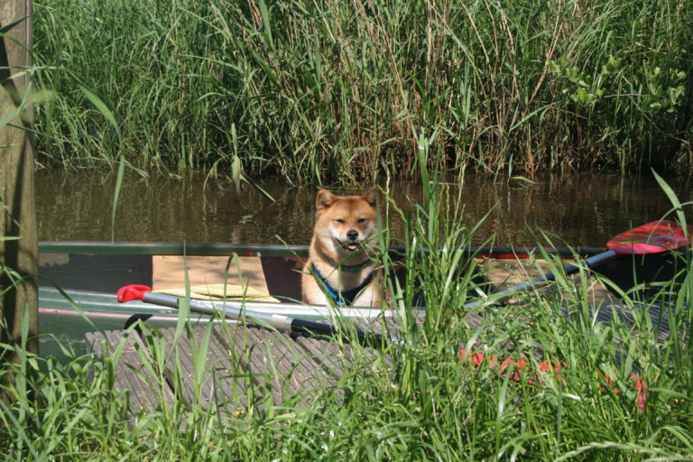
Hoewel rust, mevrouw geniet echt van het rondgereden/gevaren worden. Nu heeft ze natuurlijk het perfecte
excuus om niet te hoeven lopen. Ik ga die fietskar maar ombouwen tot buggy!
Dekmelding
11 mei 2018
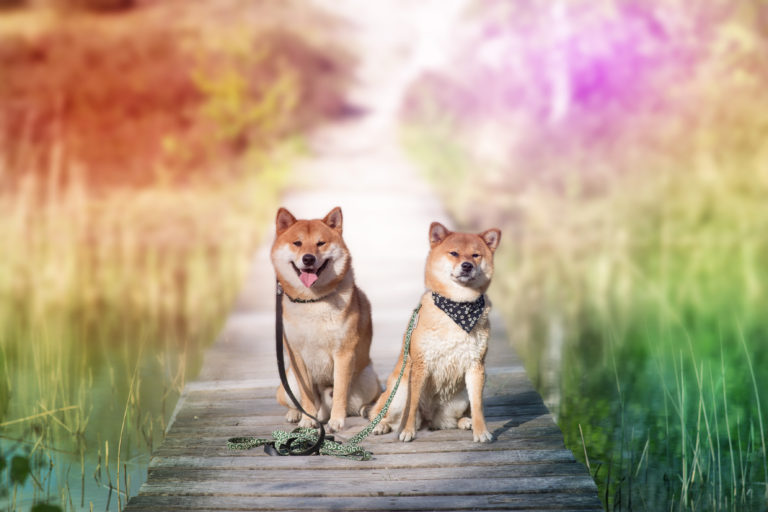
Oki heeft een date gehad met Yuki. Ondertussen hebben wij de Raad van Beheer en de rasvereneniging Nippon inu
daarvan op de hoogte gesteld. 29 mei gaan we een echo laten maken om te kijken of we pups kunnen verwachten.
Progesteron prikken
Dan nu de minder romantische kant, het progesteron prikken. Je prikt progesteron om te kijken wanneer de eisprong
geweest is zodat je weet dat je hond op de juiste tijd gedekt word, en dat daarmee de kans op een zwangerschap groter is.
Oki was het niet eens met het prikken, dat werd dus met een gillende shiba bij de dierenarts zitten.
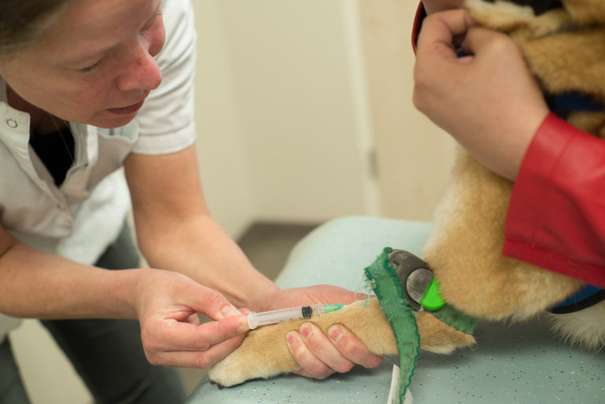
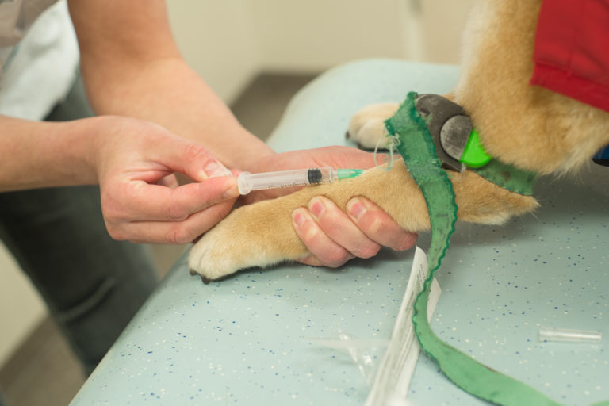
Laat de puppies maar komen
13 nov 2017
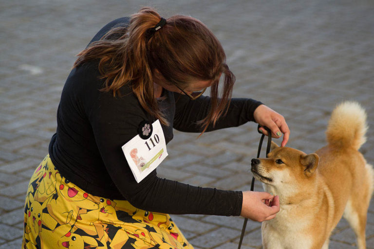
De shows zijn gelopen, en wij voldoen nu aan alle regels van de rasvereniging om een nestje te mogen krijgen.
Het was even een dingetje; Wij en Oki vonden het show-lopen niet leuk. Oki heeft twee keer een 'zeer goed'
gehaald en daarmee komt er gelijk een einde aan haar showcarrière.
meer...
Zomer
11 okt 2017
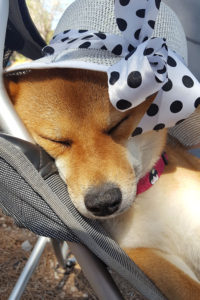
Lekker nietsdoen
Nouja niets, dan bedoelen we natuurlijk lange bergtochten,
tappas eten in Barcelona, en op de opblaaseenhoorn de zee op, Oki doet het allemaal.
Wat hebben we genoten deze zomer. Met de auto helemaal naar Andalucia gereden.
We willen jullie natuurlijk laten meegenieten van haar (en onze) vakantie. De foto's vertellen het verhaal.
meer...
Uitslagen
31 mei 2017
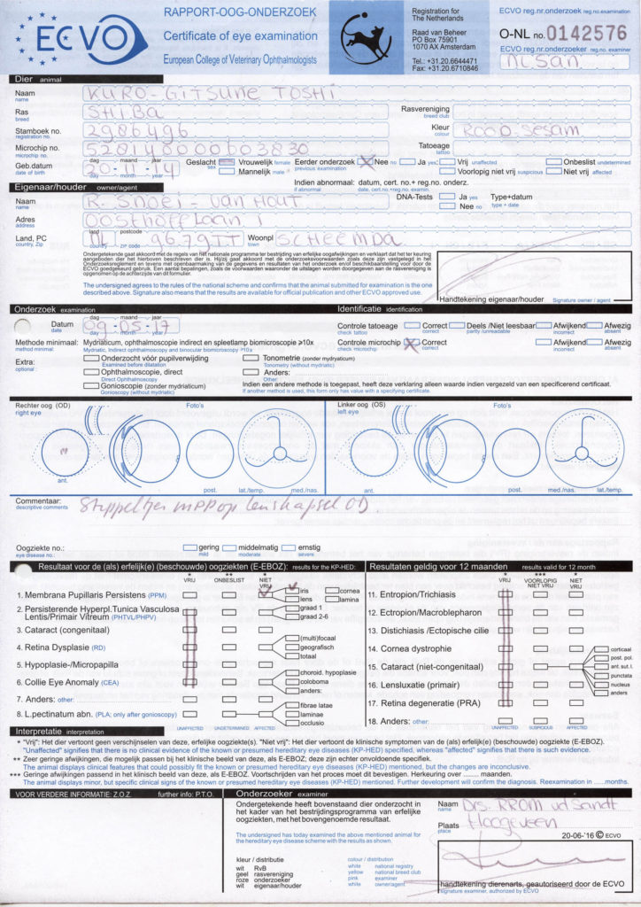
De uitslagen zijn binnen. Dat was even spannend maar de uitslagen zijn goed.
Haar knieen en heupen zijn perfect! Wat een opluchting. Dat wordt weer lekker in de bergen rennen van de zomer.
Haar ogen hebben wel een kleine afwijking. Tijdens de ontwikkeling van het oog bevinden zich weefseldraadjes voor de iris,
de membrana pupillaris. Deze verdwijnt na de geboorte. Soms blijft er iets achter, dit is ook bij Oki het geval.
Het gaat om een heel klein draadje. De dierenarts heeft aangegeven dat ze hier geen last van heeft en ook niet zal krijgen in de toekomst.
Helaas betekend dit wel dat haar ogen niet vrij zijn van afwijkingen. Je mag met deze afwijking nog steeds met je hond fokken aldus de
rasvereniging. De voorwaarde is dan dat het reutje geen oogafwijking heeft. Hier gaan we dus rekening mee houden in onze zoektocht naar
de geschikte man voor Oki.
meer...
Gezondheidstesten
12 mei 2017
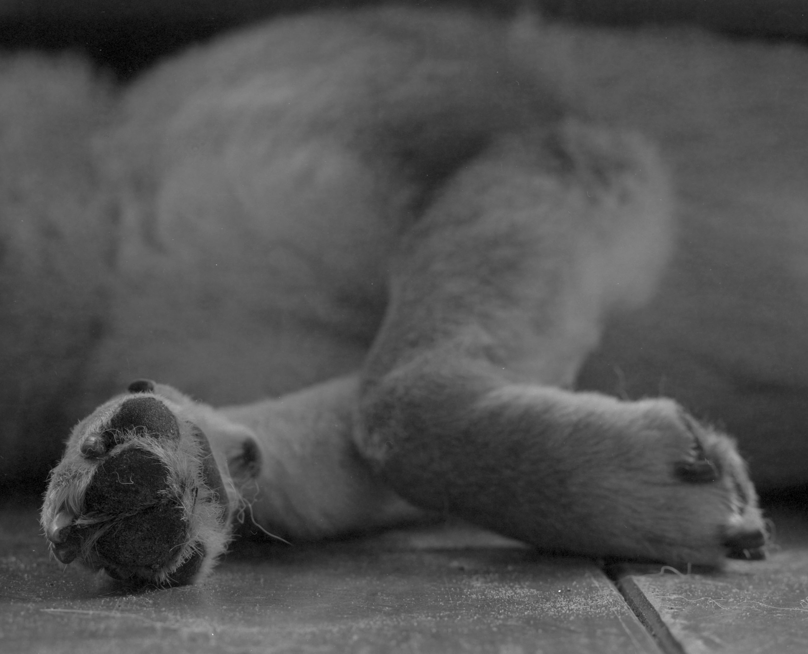
Voordat Oki gedekt mag worden, zal er een hoop moeten gebeuren.
éen van deze dingen zijn de gezondheidstesten. Oki zal gezond moeten zijn voordat ze puppy’s mag krijgen.
Afgelopen dinsdag heeft ze de testen ondergaan.
Ze vond dit helemaal niet leuk, dat gefriemel aan haar beentjes, heupen en ogen.
Gelukkig heeft ze alles doorstaan. Nu is het wachten op de uitslag
Welkom bij Senshi no Hime
9 mei 2017
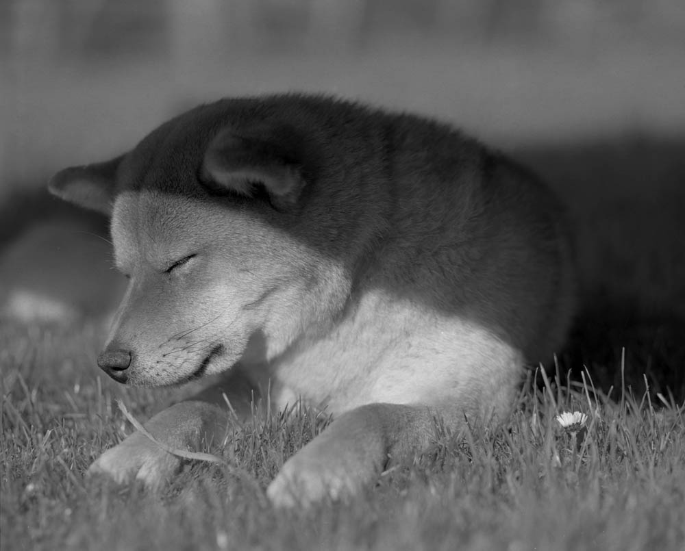
Wij zijn een Shiba kennel in Scheemda.
Houd deze site in de gaten voor meer info, plaatjes. Langzamerhand zal deze pagina gevuld
gaan worden met informatie over onze kennel.
Natuurlijk komen ook alle leuke foto's van Oki,
onze Shiba, op deze site te staan.
 Oki is onze eerste Shiba inu. We willen graag een nestje met haar volgens de regels van de rasvereniging.
De gezondheidstesten en shows zijn gedaan. Hopelijk kunnen we binnen een half jaar het eerste nestje pups
verwelkomen.
Oki is onze eerste Shiba inu. We willen graag een nestje met haar volgens de regels van de rasvereniging.
De gezondheidstesten en shows zijn gedaan. Hopelijk kunnen we binnen een half jaar het eerste nestje pups
verwelkomen.